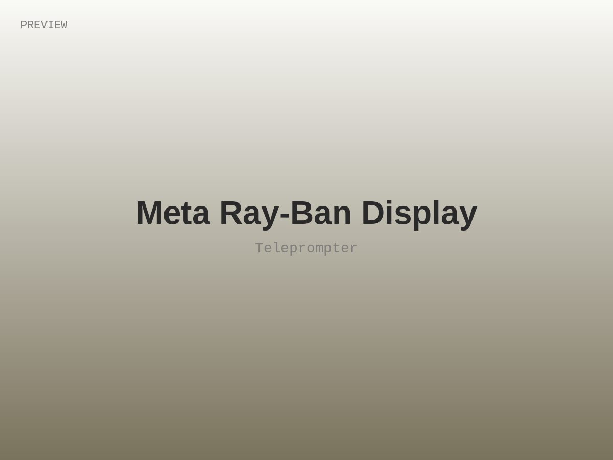
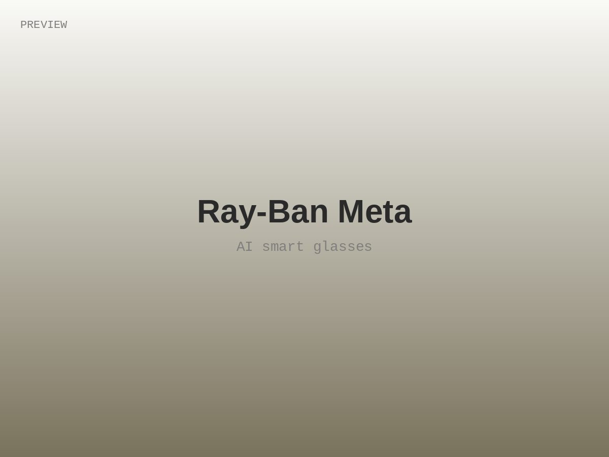
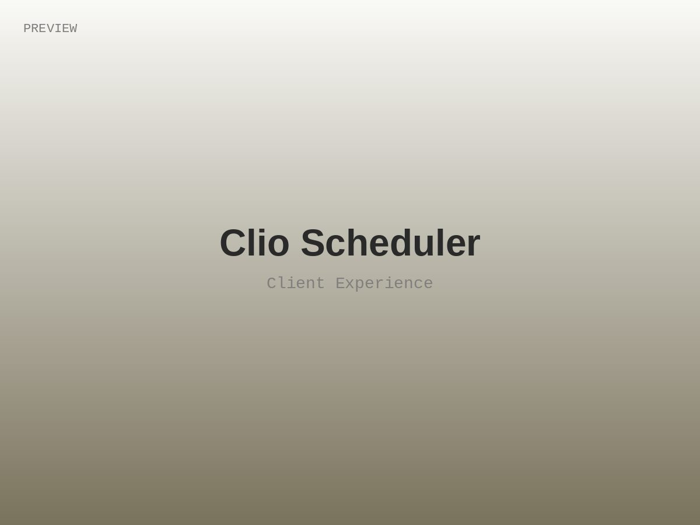
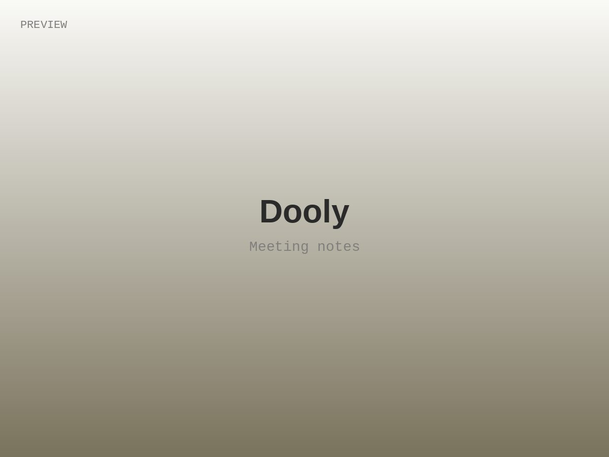

Product designer · Seattle
Hi, I'm Zachary Halvorson.
A burger-obsessed, bread-baking, Japanese-learning, fermentation-loving, codes-y designer.
I'm a digital product designer with experience across Web, iOS, and Android. I like seeing projects through from research to implementation — product strategy, interaction and visual design, front-end development, and AI design. Here's some of the work I'm proud of.


Product Designer · Meta Reality Labs
Seattle, WA
Meta Ray-Ban Display
I designed the Teleprompter — one of the headline features we launched for Meta Ray-Ban Display. It lets you speak naturally and stay on script without ever breaking eye contact, and it led much of the device's coverage out of CES.

Product Designer · Meta Reality Labs
— Present
Seattle, WA
Ray-Ban Meta
I've designed AI-native features for Meta's smart glasses since the category began — creating novel, hands-free interactions for capturing and sharing the moment, including the livestreaming experience. The product headlined Meta Connect.

Design Lead · Clio
—
Vancouver, BC
Clio Scheduler
I led design for Clio's Client Experience portfolio and conceived the Clio Scheduler — an online booking product for law firms that headlined Clio's customer conference. Clio serves 100,000+ paid accounts across North America and Europe.

Lead Designer · Dooly
—
Vancouver, BC
Dooly
As the first hire and sole designer, I shaped Dooly end to end — product, brand, and front-end — building a note-taking tool that helps customer-facing teams have better meetings. We grew from zero to dozens of enterprise accounts, including Asana, Intercom, and Contentful.

Education & contact
Thanks for scrolling.
If you've got questions or want to learn more, feel free to reach out.
- Capilano University North Vancouver, BC
- Interactive Design Diploma –
- University of Alberta Edmonton, AB
- Bachelor of Education — Math major, Art minor –